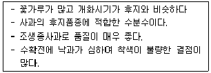

원예기능사 (2012-04-08 기출문제)
1과목: 임의 구분
1. 환기의 효과로 볼 수 없는 것은?
- 온 ㆍ 습도 조절
- 유해가스 추방
- 이산화탄소 공급
- 보온 효과 증대
(정답률: 86%)

2. 다음 중 환경을 구성하는 환경요인에 속하지 않는 것은?
- 기상(氣象)
- 토양(土壤)
- 생물(生物)
- 물질(物質)
(정답률: 78%)
3. 다음 중 시설재배에서 문제가 되는 유해 가스는?
- 질소가스
- 이산화탄소
- 아질산가스
- 플루오르화수소가스
(정답률: 88%)
4. 공정육모의 효과로 볼 수 없는 것은?
- 모종의 생산비 절감
- 정식의 기계화 가능
- 경지 이용률 향상
- 모조의 취급 및 수송에 불리
(정답률: 94%)
5. 다음 중 식물의 즙액을 빨어먹는 흡즙성 해충은?
- 배추흰좀벌레
- 파밤나방
- 거세미나방
- 응애
(정답률: 95%)
6. 유용미생물의 생존을 고려할 때 토양 소독시 온도를 몇 ℃로 하는 것이 가장 좋은가? (단, 해당 온도로 30분간 소독하는 것을 권장한다.)
- 100
- 80
- 60
- 40
(정답률: 78%)
7. 토양수분의 pF값이 3.0이다. 이때 기압의 단위로 환산하면 얼마인가?
- 0.1 bar
- 0.5 bar
- 1.0 bar
- 5.0 bar
(정답률: 70%)
8. 육묘 때의 환경과 정식 후의 환경이 달라지므로 모종을 적응하게 하기 위해 필요한 시설은?
- 파종실
- 포장실
- 경화실
- 발아실
(정답률: 83%)
9. 다음 중 토마토, 오이, 고추, 딸기, 셀러리 등 작물의 시설내 토양의 일반적인 관수 개시 시점으로 가장 적당한 것은?
- pF 0.4 이하
- pF 0.5~0.9
- pF 1.0~1.4
- pF 1.5~2.0
(정답률: 60%)
10. 식물 공장의 기대 효과가 아닌 것은?
- 연속 재배 가능
- 농약 사용의 최소화
- 농가 소득 감소
- 적은 인력으로 관리용이
(정답률: 96%)
11. 시설내의 온도교차에 대한 해석으로 올바른 것은?
- 시설 내 ㆍ 외의 온도차
- 밤 ㆍ 낮의 온도차
- 재배기간 중 온도의 일변화
- 하루 중 최고 온도와 최저 온도차
(정답률: 60%)
12. 다음 중 온실 내부가 고온 건조할 때 발생하기 쉬운 해충은?
- 응애
- 민달팽이
- 깍지벌레
- 선충
(정답률: 79%)
13. 포장용수량의 용적비가 40%, 관수 전 토양의 함수비가 30%, 뿌리의 분포 깊이가 30cm 일 때 1회 관수량은 얼마인가?
- 10mm
- 20mm
- 30mm
- 40mm
(정답률: 52%)
14. 수경재비시 배지의 종류 중 산도(pH)가 가장 낮은 것은?
- 버미큘라이트
- 펄라이트
- 피트모스
- 훈탄
(정답률: 57%)
15. 다음 중 광포하점이 가장 높은 작물은?
- 완두
- 고추
- 수박
- 오이
(정답률: 72%)
16. 일반적으로 참외의 1개의 아들덩굴 적정 유인 본 수는?
- 2본
- 6본
- 8본
- 12본
(정답률: 80%)
17. 시설하우스 토양내에 가장 많이 집적되는 염류의 종류는?
- 염소
- 마그네슘
- 칼륨
- 질산태 질소
(정답률: 65%)
18. 토양의 구조에서 단립(團粒)구조의 특성으로서 알맞은 것은?
- 공극량이 적다.
- 공기의 유통이 좋다.
- 수분이 알맞게 간직된다.
- 작물 생육에 적합하다.
(정답률: 79%)
19. 다음 중 가지 꽃 형태 가운데 착과가 가장 잘 되는 꽃 형태는?
- 단화주화(短靴柱花)
- 중화주화(中花柱花)
- 불완전화(不完全花)
- 장화주화(長花柱花)
(정답률: 68%)
20. 오이나 수박을 호박에 접붙이기하여 기르는 이유로 틀린 것은?
- 흡비력이 높아진다.
- 덩굴쪼김병이 방지된다.
- 이어짓기 피해를 줄일 수 있다.
- 암꽃의 수가 많아진다.
(정답률: 63%)
2과목: 임의 구분
21. 다음 시설재배용 오이품종으로서 갖추어야 할 구비조건이 틀린 것은?
- 저온 신장성이 강하다.
- 단위 결과성이 강하다.
- 마디 사이가 길다
- 약한 광선에서 잘 자란다.
(정답률: 78%)
22. 외지붕형 단독 온실 또는 위도가 높은 지역에서 저온기에 촉성재배를 할 경우에 하우스를 설치하는 방향으로 가장 이상적인 것은?
- 남북동
- 동남동
- 동서동
- 북서동
(정답률: 73%)
23. 무의 발아기에 5℃ 이하 저온과 생육기간 중에는 하루평균 온도가 12℃ 이하로 일정기간이 지나면 저온 감응되어 일어나는 현상은?
- 생육촉진
- 화아분화
- 분얼
- 포기않기
(정답률: 76%)
24. 강물이 운반하여 온 흙과 모래가 쌓여서 이루어진 토양으로 배수가 잘 되고 비옥하기 때문에 대부분의 채소 재배에 적합한 토양은?
- 대적토
- 충적토
- 홍적토
- 화산회토
(정답률: 85%)
25. 다음 중 전열온상의 단점에 해당하는 것은?
- 설치하기가 쉽다.
- 철거하기가 쉽다.
- 건조하기가 쉽다.
- 온도조절이 쉽다.
(정답률: 85%)
26. 채소의 접목방법 중 공정육묘장에서 플러그 육모시 주로 사용하는 접목방법이 아닌 것은?
- 삽접
- 호접
- 핀접
- 편엽합접
(정답률: 52%)
27. 농약의 살충 작용이 해충의 소화기 내에서 작용하는 것은?
- 독제
- 접촉제
- 훈증제
- 침투성 살충제
(정답률: 57%)
28. 다음 중 풋마름병이 발생하는 채소는?
- 양배추
- 가지
- 당근
- 배추
(정답률: 72%)
29. 시비량은 대개 수확물 중의 흡수량에 천연공급량을 빼고 이용률을 나누어주는 방법으로 계산된다. 예를 들어 토마토의 경우 전체 흡수량이 25kg/10a, 천연공급량이 5kg/10a, 이용률 70%라고 할 때 정식 전에 50%를 밑거름으로 주려고 한다. 요소(질소질 46%)는 얼마인가?(오류 신고가 접수된 문제입니다. 반드시 정답과 해설을 확인하시기 바랍니다.)
- 20(kg/10a)
- 23(kg/10a)
- 29(kg/10a)
- 46(kg/10a)
(정답률: 54%)
30. 잎의 결구현상에 대한 설명 중 틀린 것은?
- 결구성 엽채류의 결구과정으로 외엽발육기, 결구기, 엽구충실기로 구분된다.
- 양파나 마늘은 단일조건에서 인경(인엽구 : scaly bulb)의 형성과 비대가 촉진된다.
- 결구성 엽채류에서 외엽은 주로 광합성에 관여하며, 결구엽은 동화산물의 저장에 관여한다.
- 엽수형은 엽수가 엽구의 크기가 중량을 결정하는 형태이다.
(정답률: 71%)
31. 사과나무의 열매솎기(적과)를 실시하여도 해거리 방지 효과를 기대할 수 없는 시기는?
- 만개후 10일
- 만개후 15일
- 만개후 30일
- 만개후 75일
(정답률: 62%)
32. 감의 탈삽 방법으로 적합하지 않은 것은?
- 알코올 처리법
- 더운 물 처리법
- 층적 저장법
- 이산화탄소 주입법
(정답률: 57%)
33. 양앵두 수확시 유의점으로 옳지 않은 것은?
- 수확은 될 수 있는 한 이른 아침부터 10시경은 피하여 작업한다.
- 단과지를 꺾지 않도록 주의하며 과경을 쥐고 수확한다.
- 품종, 수령, 결실량에 따라 과실품질에 영향을 미친다.
- 수확시에는 잎과 눈을 손상시키지 않도록 한다.
(정답률: 78%)
34. 다음 중 일조가 부족할 때 일어나는 현상 설명으로 가장 적합한 것은?
- 가지는 웃자라고 과실 크기는 작아지지 않는다.
- 과실 착색이 불량해지고 단맛이 떨어진다.
- 단맛은 떨어지나 과실은 더 커지는 경향이 있다.
- 과실 착색은 불량해지나 가지가 웃자라지는 않는다.
(정답률: 71%)
35. 배 품종 중 행수와 신세기에서 많이 발생하며, 증상은 과실 표면 전체에 발생되거나 행수의 경우 꽃받침 부위에 균열이 생기는 생리장해는?
- 돌배
- 열과
- 직진병
- 흑반병
(정답률: 57%)
36. 묘목을 선택할 때 주의할 점이 아닌 것은?
- 품종이 적확한 것
- 웃자란 묘목
- 뿌리상태가 고르게 큰 것
- 병해충이 없는 것
(정답률: 79%)
37. 다음 중 적정 pH가 가장 낮은 곳에서 재배되는 과수는?
- 포도(유럽종)
- 사과
- 밤
- 포도(미국종)
(정답률: 72%)
38. 다음 과실 중 꽃받기(花耗, receptacle)가 발달하여 식용부위를 형성하는 것은?
- 복숭아
- 매실
- 사과
- 자두
(정답률: 76%)
39. 다음 중 포도 휴면병의 효과적인 예방대책으로 가장 적당한 것은?
- 결실을 과다하게 한다.
- 질소질 비료를 충분히 공급하여 나무의 세력을 왕성하게 한다.
- 조기낙엽이 되지 않도록 하면 겨울철에 묻어주지 않아도 된다.
- 겨울철에 건조하기 않게 부초(敷草)하여 주며 내한성이 약한 품종은 묻어준다.
(정답률: 82%)
40. 다음 휘묻이 방법 중 새로운 개체를 가장 많이 얻을 수 있는 방법은?
- 보통법
- 망치묻이(빗살묻이)
- 높이떼기
- 끝묻이법
(정답률: 71%)
3과목: 임의 구분
41. 다음 설명하는 사과의 품종은?

- 축
- 인도
- 쓰가루
- 무쓰
(정답률: 62%)
42. 다음 중 9월 상 ㆍ 중순경에 최적기인 접목법으로 감귤에 가장 많이 이용하는 것은?
- 배접
- 눈접
- 다리접
- 혀접
(정답률: 64%)
43. 다음 중 이세리아깍지벌레의 천적으로 5~6월경에 방사하는 것은?
- 베다리아무당벌레
- 진디벌
- 말매미
- 왕담배나방
(정답률: 78%)
44. 사과의 그을음병 피해를 설명한 것 중 틀린 것은?
- 과실 속까지 부패시킨다.
- 과실뿐만 아니라 줄기나 잎에도 발생한다.
- 발생기인 여름의 고온 기간에는 발생이 적다.
- 과실 표면에 흑녹색의 원형 또는 부정형의 그을음 모양의 병반이 형성된다.
(정답률: 50%)
45. 배명나방은 1년에 몇 회 발생하는가?
- 1회
- 2회
- 3회
- 4회
(정답률: 75%)
46. 키에 따른 분류 중 키가 커서 화단 뒤쪽에 심는 고생종(高生種) 식물에 해당하는 것은?
- 크레오메(풍접초)
- 무스카리
- 데이지(Bellis)
- 글록시니아
(정답률: 60%)
47. 외쪽지붕형 온실로서 적합하지 않은 것은?
- 구조가 가장 간단한 온실이다.
- 발열량이 많아져서 비경제적이다.
- 남면 경사의 지붕이다.
- 통풍이 잘된다.
(정답률: 50%)
48. 다음 중 음지성 식물에 해당되는 것은?
- 드라세나
- 아게라툼
- 채송화
- 국화
(정답률: 69%)
49. 다음 중 접붙이기에서 대목과 접순의 친화성 설명으로 옳은 것은?
- 크기가 서로 같은 것이 친화성이 높다.
- 굵기가 같을수록 친화성이 높다.
- 분류학상 과(科)나 속(屬)이 가까울수록 친화성이 높다.
- 형태적으로 비슷하면 친화성이 높다.
(정답률: 83%)
50. 포인세티아를 촉성재배하려 할 때 어떠한 처리가 필요한가?
- 보광
- 장일처리
- 차광
- 난방
(정답률: 60%)
51. 시클라멘 재배시 개화를 촉진하기 위하여 지베렐린 처리를 하는 방법 중 가장 옳은 것은? (단, 일반계 대륜종으로 9월경에 실시한다.)
- 1~50ppm 정도 용액을 어린 꽃봉오리에 살포한다.
- 20~40ppm 정도 용액을 잎에 살포한다.
- 50~70ppm 정도 용액을 잎과 어린 꽃봉오리에 살포한다.
- 100ppm 정도 용액을 식물체 전체 살포한다.
(정답률: 71%)
52. 카네이션의 개화기에 '언청이' 발생원인과 관련이 없는 것은?
- 꽃받침의 생장보다 꽃잎의 생장이 급격하게 이루어 질 때
- 주 ㆍ 야간 온도 변화가 작을 때
- 꽃눈발달 시기가 지나친 저온일 때
- 꽃눈 발달시 수분과 거름이 과다할 때
(정답률: 75%)
53. 화훼에서 DIF 란 무엇인가?
- 종자의 발아와 관련된 용어이다.
- 식물의 생육조절과 관련된 용어이다.
- 식물의 분류할 때는 용어이다.
- 뿌리의 형태를 구분하는 용어이다.
(정답률: 83%)
54. 다음 관엽식물 중에서 천남성과에 속하는 것은?
- 디펜바키아
- 종려죽
- 아스파라거스
- 구즈마니아
(정답률: 43%)
55. 토양 보수력의 크기를 올바르게 나열한 것은?
- 사토 ＜ 양토 ＜ 식토
- 식토 ＜ 양토 ＜ 사토
- 양토 ＜ 식토 ＜ 사토
- 사토 ＜ 식토 ＜ 양토
(정답률: 66%)
56. 토양에 시비할 때 알칼리성을 나타내는 비료는?
- 요소
- 용성인비
- 중과인산석회
- 염화칼륨
(정답률: 68%)
57. 6-3식 석회보르도액을 200L 조제하고자 한다. 사용되는 생석회의 양은 얼마인가?
- 300g
- 600g
- 900g
- 1,200g
(정답률: 63%)
58. 구근류 생산에 알맞은 토양은?
- 점질토
- 충적토
- 사토
- 암석토
(정답률: 55%)
59. 튤립 모자이크병의 일반적인 증상은?
- 고유의 꽃색에 얼룩무늬가 생긴다.
- 뿌리가 썩는다.
- 잎에 흰색의 밤점이 생긴다.
- 꽃잎이 부러진다.
(정답률: 77%)
60. 농약에 관한 설명 중 옳지 못한 것은?
- 병해충 및 잡초로부터 작물을 보하는데 쓰인다.
- 농산물의 증가 생산에 필수적이다.
- 최근에는 농약의 개념에 생물농약을 포함한다.
- 화학농약은 생태계나 인축에 피해가 없다.
(정답률: 85%)